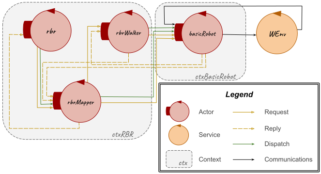
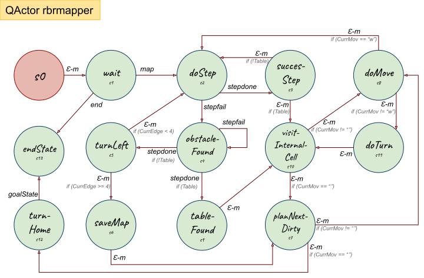
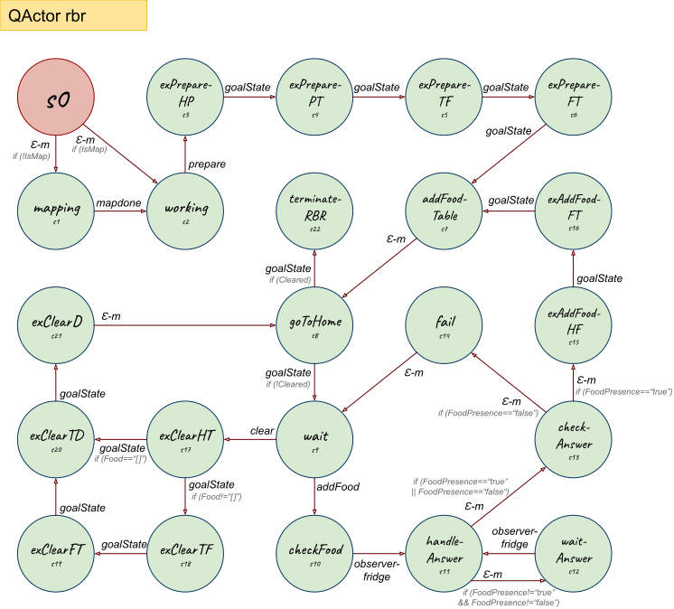
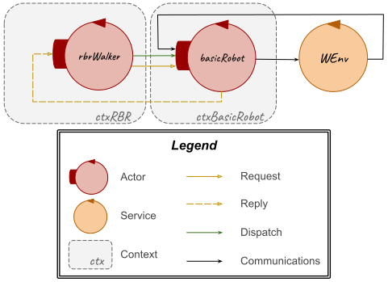
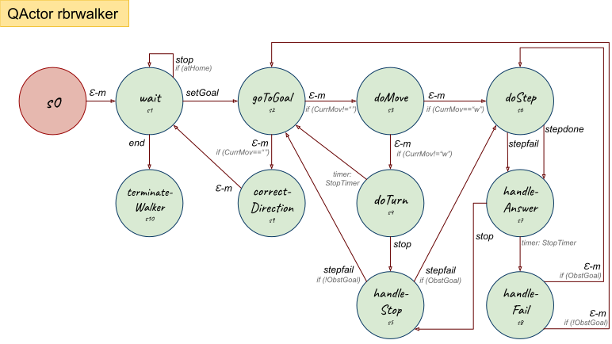
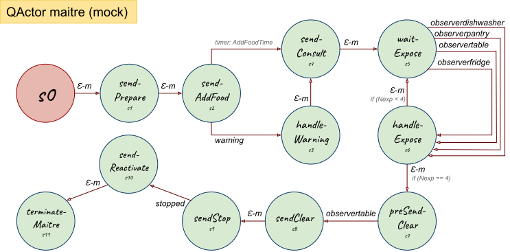
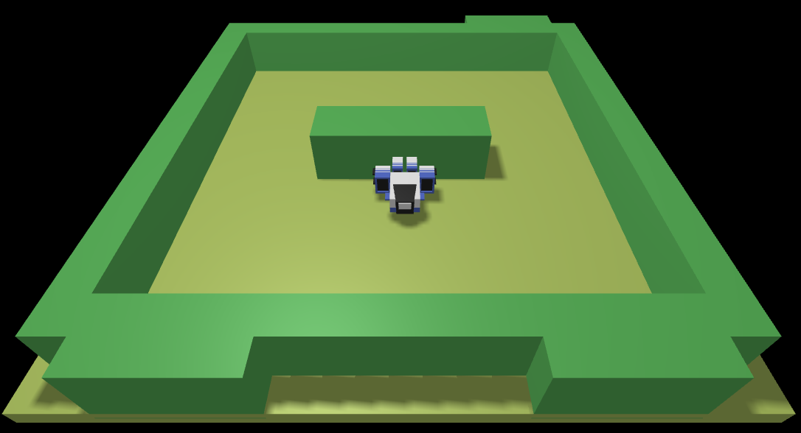
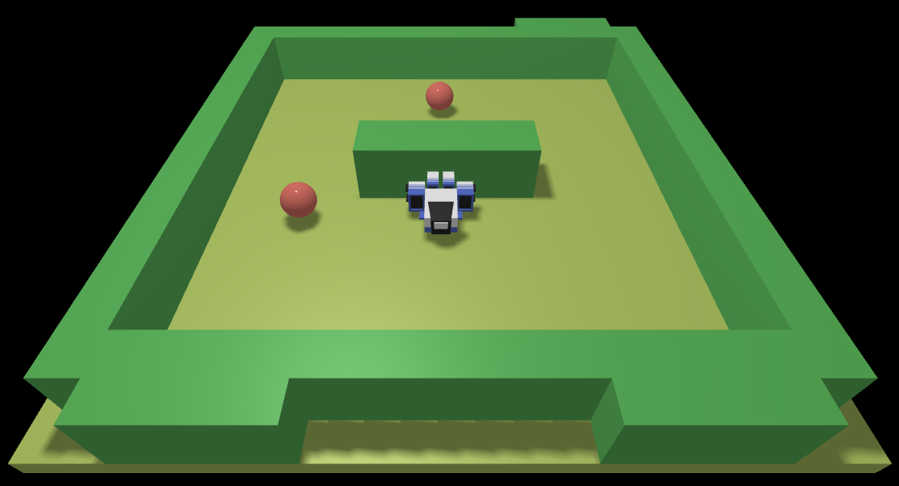
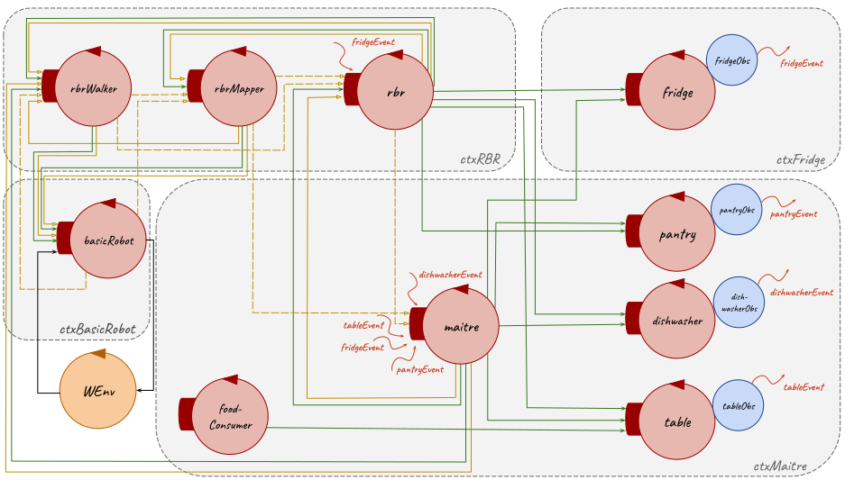

Introduction
The starting point for this SPRINT is the resulting model from the previous Sprint 1:| Machine Understandable Architecture Model | A Possible Graphic Representation |
|---|---|
|
Sprint 1 model.qak |
 
|
Goal
- Mapping: use of
basicrobot and sonar to map theroom - Avoid the impact with obstacles requirement
- Stop/Reactivate feature
Prepare the room task : path execution by the virtual robot avoiding the obstacles and receiving stop and then reactivate commandsAdd Food task : path execution by the virtual robot avoiding the obstacles and receiving stop and then reactivate commandsClear the room task : path execution by the virtual robot avoiding the obstacles and receiving stop and then reactivate commands
Problem Analysis
The problems related to this sprint goals, that are already addressed in the initial problem analysis, are detailed below.Mapping
As already said in the initial problem analysis, to be able to map theTherefore, the mapping goal is to create a new
Furthermore, at each step carried out by the robot it's necessary also to update the

Avoid the Impact with Obstacles Requirement
By requirements, theAs already said above and in the initial problem analysis, to satisfy the requirement avoid the impact with obstacles, it's possible to use data collected from a sensor, which can be represented by a sonar (in both virtual and real robot; in this Sprint, it will be a virtual robot (VirtualRobot2021.html) running on its own WEnv (Web Environment) to solve the goals about the execution of the
Indeed, as already detailed in the Sprint 1 problem analysis, when the
Therefore, to address this problem, it could be sufficient to manage the stepfail message received from the
- temporarily setting the obstacle in the logical map and planning a new path to reach the goal; so to get around the obstacle. Then, before starting the execution of the next steps, the obstacle must be deleted from the logical map;
- waiting for the mobile obstacle to move and so periodically carrying out the movement until the cell that must be occupied will be free.
Stop and Reactivate Feature
By requirements, theIn Sprint 1 it has been added a new actor (
Therefore, referring to the result of the Sprint 1 and to the solution at this problem advanced in the initial problem analysis, to manage the the stop and reactivate commands received by the
The communications for sending these commands could be implemented in different ways:
From these solutions, the better choose, in this sprint, looks to be the third one, because it's the
Test Plans
With reference to the initial problem analysis test plans, below it's reported a functional tests planning related to the goals of this sprint:- Tests of the state of the
RBR to verify that it is stopped after receiving stop command and to verify that it resumestask execution after receiving the reactivate command; - Tests of the stop and reactivate commands that can be used by
Maître de salle only when there is a runningtask ; - Test of the capability of the
RBR to avoid all the possible obstacles.
Project
Mapping
In Sprint 1, for the planning it has been created a project (MapBinGenerator) which creats aInstead, in this sprint, it has been introduced the mapping feature that provides a logical map of any type of room, either it is real or virtual, by exploiting the
To realize this behavior it seemed to be more appropriate to create a new actor (
In particular, after receiving a map
- sending to the
basicrobot arequest message step for forward movements until it receives thereply stepfail when the robot has met a wall; otherwise it updates the logical map using Planner command updateMap every time it receives thereply stepdone; - sending to the
basicrobot , once received stepfailreply , adispatch message cmd(l ) to turn left the robot.
Then, this actor starts to explore the internal spaces of the
- using the Planner command planForNextDirty, which returns a list of actions to reach the first unexplored cell in the logical map;
- sending a
request message step for forward movement, by waiting for thereply stepdone or stepfail respectively in case of success or fail when the robot meets an obstacle (thetable ), and adispatch message cmd for the other movements; - updating at each step the logical map using the Planner command updateMap when it receives the stepdone
reply or when it sends thedispatch cmd or using the Planner command updateMapObstacleOnCurrentDirection when it receives the stepfailreply .
After this, this actor sends a
Afterwards, when the
Finally, it terminates itself.
It was introduced also the possibility for the
| Machine Understandable Models | A Possible Graphic Representation |
|---|---|
|
Portion of |
 |
| Moore State Machine Diagrams | |
|
  |
Avoid the Impact with Obstacles Requirement
To solve the requirement avoid the impact with obstacles it has been sufficient to extend the behavior of theIn particular, as proposed during the problem analysis of this goal, two scenarios are distinguished:
- if the obstacle is in the goal position then the
rbrwalker retries periodically the movement until the cell that must be occupied will be free; - otherwise the obstacle it's temporarily added to the logical map by using the Planner command updateMapObstacleOnCurrentDirection and it's planned a new path with the Planner command planForGoal to reach the goal; so to get around the obstacle. Before performing the next move, the obstacle it's removed from the logical map.
| Machine Understandable Models | A Possible Graphic Representation |
|---|---|
|
Portion of |
 |
| Moore State Machine Diagrams | |
|
 |
Stop and Reactivate Feature
With reference to the problem analysis about this goal, to solve the stop and reactivate feature, among the four solutions presented, the third one was chosen, where theIn particular, the
Then, the
- checking if it has received the stop command not during the execution of a
task , by verifying if the robot position in the logical map coincides with theRH position using the Planner command atHome and in this case answering to themaitre with a stopped(false )reply ; otherwise it procedes managing the setGoal or the end message; - checking, at the end of each step, during the execution of a
task , if it has received a stop command and in this case it sends areply stopped(true ) to themaitre and waits for the reactivate command; otherwise it can carry out the next step.
| Machine Understandable Models | A Possible Graphic Representation |
|---|---|
|
Portion of |
|
| Moore State Machine Diagrams | |
|
 |
WEnv Scene for Virtual Robot
To make possible the simulation of the virtual robot on its WEnv, can be use the sceneConfig.js file used in Sprint 1.To add mobile obstacles in the WEnv, starting from this file, it's possible to uncomment and in case modify the part related to the movingObstacles. An example can be the scene represented below using the sceneConfig.js.
Obliviously, during the mapping phase, the scene represented in the WEnv should be without mobile obstacles.
| WEnv | WEnv with Mobile Obstacles |
|---|---|
|  |  |
Testing
Below there are exposed some tests made for this sprint project:- StopAndReactivateTest.kt
- Tests about the correct execution of the stop and reactivate feature:
- StopAndReactivateTest: after the send of a stop command to the
rbrwalker , it's verified that the stop command fails when therbrwalker is not executing atask and that has success when therbrwalker is executing atask , stopping and waiting for a reactivate command. Then, after a send of a reactivate command, it's verified that therbrwalker resumestask execution reaching the expected goal. In particular, this test:- Sends a stop
request torbrwalker actor; - Checks that stop
request fails; - Sends a setGoal
request to therbrwalker ; - Sends again a stop
request to therbrwalker ; - Checks that stop
request has success; - Sends a reactivate
dispatch torbrwalker ; - Checks that reactivate
request has success; - Checks that the final robot position, taken from the
rbrwalker state, is the expected one.
- Sends a stop
- StopAndReactivateTest: after the send of a stop command to the
- AvoidMobileObstacleTest.kt
- Tests about the correct execution of the requirement avoid the impact with mobile obstacles:
- AvoidMobileObstacleTest: after placing an obstacle in the WEnv, in the expected path walked by the robot, it's verified that
rbrwalker , even if meets an obstacle, reaches the expected goal. In particular, this test:- Sends a setGoal
request ; - Cheks that an obstacle is met;
- Checks that the final robot position, taken from the
rbrwalker state, is the expected one.
- Sends a setGoal
- AvoidMobileObstacleTest: after placing an obstacle in the WEnv, in the expected path walked by the robot, it's verified that
These tests are used to test the internal components of this sprint project and not the externals, like the
These tests are executed on a single context (
Model of System's Logical Architecture
| Machine Understandable Architecture Model | A Possible Graphic Representation |
|---|---|
|
Sprint 2 model.qak |
 |
Deployment
The deployment of the application for the virtual robot can be done at the same way of the deployment explained in Sprint 1.As said in the previous sections of this sprint, the scene of the WEnv can be modify to introduce mobile obstacles and in this case the sceneConfig.js file must be reload.
Furthermore, to execute the mapping operation there must not be mobile obstacles in the
SCRUM Context
SPRINT Sequence
After this Sprint and according to the Product Backlog, listed after the problem analysis, a possibile set of next Sprint could be:- SPRINT 3
- GUI for
maître's smartphone software - Tests
- GUI for
- SPRINT 4
- Deploy on Raspberry
Prepare the room task : execution by the real robotAdd Food task : execution by the real robotClear the room task : execution by the real robot- Tests